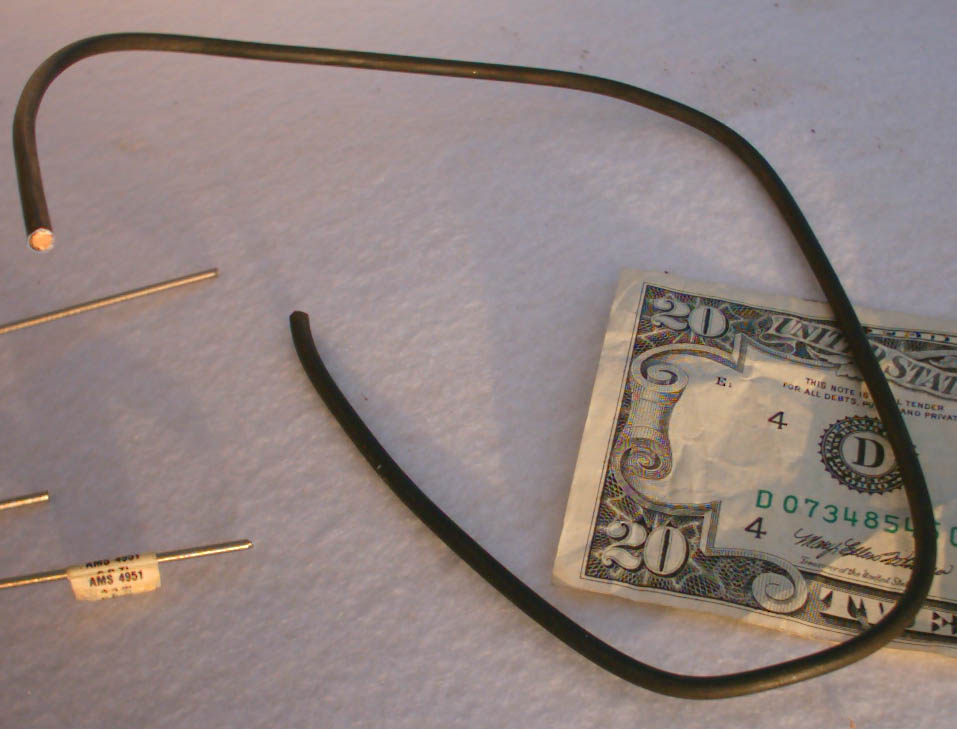
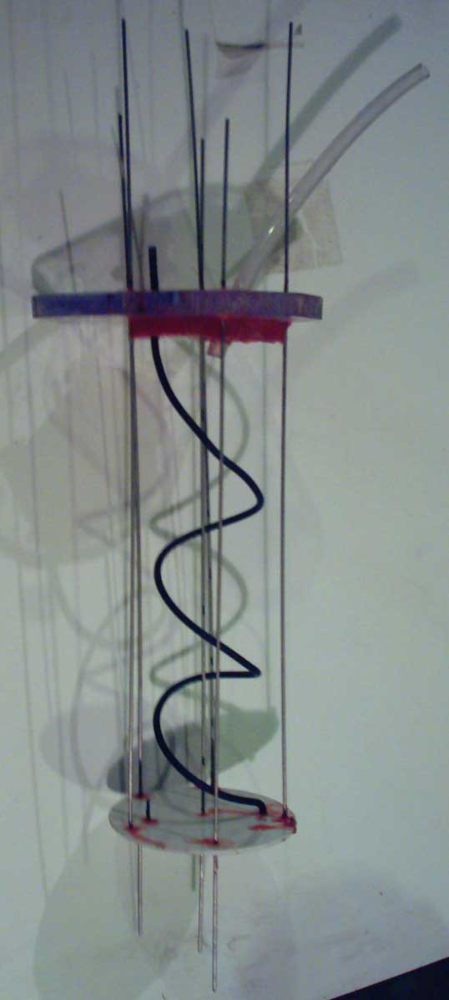
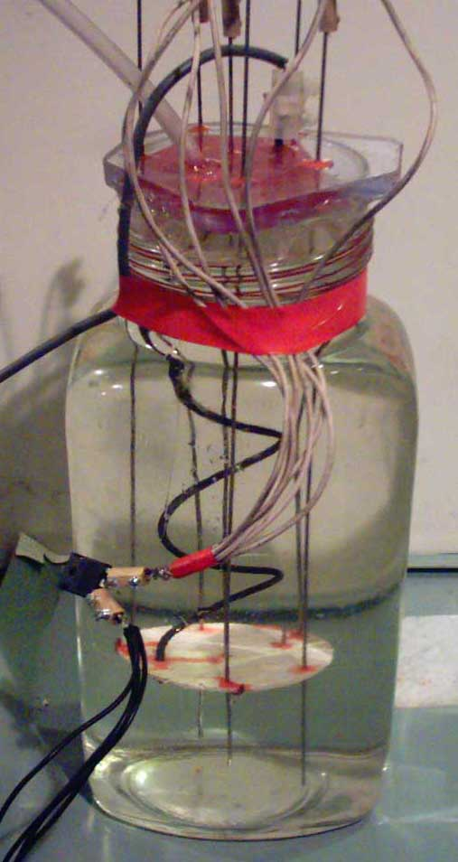

Mixed Metal Oxide (MMO) Anode in action
The Anode shown here is a 'wire' type corrosion control electrode. It has a Copper core surrounded
by Ti with a MMO on top. The coating is black in colour. It would seem that Ir Oxide is black and the Ir
Oxide prevents the coating from being stripped off when Anode is used in dilute (brackish) solutions
or even in clean water. The Anode current densities in corrosion control are less than that in a
Chlorate cell.
Below, the Ti with Copper core can be seen. The anode wire is 3mm Dia.
The welding rods are Ti of 1.5mm Dia.



A computer supply, 5 Volts, was used to run the Anode. A diode was connected in series to reduce the,
current to 8 amps. Anode was run about 240mA per square cm. Temperature was about 25C. Volume of cell
about 3.4 litres.
K Chlorate precipitated from cell about 24 hours after cell was started.
There appeared to be damage to the surface of the anode after a single run.
It appeared as if a part of the MMO coating on the upward facing surface of the anode near the top of
liquid was eroded away. It is difficult to tell. The area concerned still emitted gas when in use.
The cell was run a second time. Saturated solution (18C) of KCl used. Current was reduced to 4.1amps.
Approx. 125mA/cm squared.
The cell was run for approx. 1.5 days until K Chlorate began to precipitate out.
The cell was cooled to
15C and the ppt was filtered out
The cell was run for a further 10 days, cooled to 15C and the K Chlorate filtered, dried and weighed. Current
efficiency was measured (based on yield of K Chlorate above) to be 65%. No pH control. No additives (like
Fluoride or Persulphate) added.
HIT THE BACK BUTTON ON YOUR BROWSER
BACK TO TOP